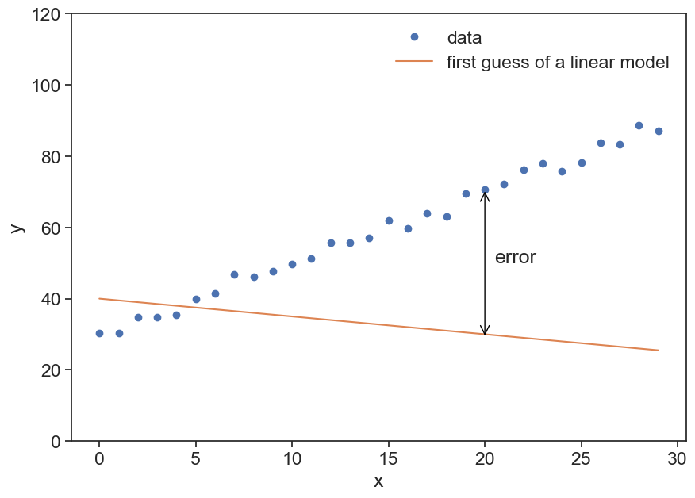

import numpy as np
import matplotlib.pyplot as plt
import seaborn as sns
sns.set(style="ticks", font_scale=1.5)
from scipy.optimize import curve_fit
import matplotlib.patches as patches12 Exercises
12.1 Tasks
- Google the following: web plot digitizer
- Load image “nassif-16percent-slope.png” (see below)
- Create four csv files, one for each data set. Call them whatever you want. Legend: white circle = 312 mm/h, triangle = 234 mm/h, x = 156 mm/h, black circle = 78 mm/h.
The image is the second panel of Fig. 8, from > Nassif, S. H., and E. M. Wilson, 1975, “THE INFLUENCE OF SLOPE AND RAIN INTENSITY ON RUNOFF AND INFILTRATION”, Hydrological Sciences Journal. download here

Import relevant packages
Load all four files you created. Use numpy’s function loadtxt. Make sure that the first point in each table corresponds to the appropriate rainfall rate. You can normalize the data if it is not.
d1 = np.loadtxt("input_rate_078mm_per_h_16percent_slope.csv", delimiter=',')
d2 = np.loadtxt("input_rate_156mm_per_h_16percent_slope.csv", delimiter=',')
d3 = np.loadtxt("input_rate_234mm_per_h_16percent_slope.csv", delimiter=',')
d4 = np.loadtxt("input_rate_312mm_per_h_16percent_slope.csv", delimiter=',')
d1[:,1] = 78 * d1[:,1] / d1[:,1].max()
d2[:,1] = 156 * d2[:,1] / d2[:,1].max()
d3[:,1] = 234 * d3[:,1] / d3[:,1].max()
d4[:,1] = 312 * d4[:,1] / d4[:,1].max()Reproduce the original figure, make it look good, something like this:
fig, ax = plt.subplots(figsize=(10,7))
ax.plot(d4[:,0], d4[:,1], 'o', markerfacecolor="None", label=r"water input = 312 mm h$^{-1}$")
ax.plot(d3[:,0], d3[:,1], '^', label=r"water input = 234 mm h$^{-1}$")
ax.plot(d2[:,0], d2[:,1], 'x', label=r"water input = 156 mm h$^{-1}$")
ax.plot(d1[:,0], d1[:,1], 'o', label=r"water input = 78 mm h$^{-1}$")
ax.set(xlabel="Time (min)",
ylabel=r"Infiltration rate (mm h$^{-1}$)")
ax.legend(loc="upper right");12.2 Horton’s equation
\[ f = f_c+(f_0-f_c)e^{-\beta t} \]
- \(f\): infiltration rate
- \(f_c\): infiltration capacity at large \(t\)
- \(f_0\): initial infiltration capacity
- \(\beta\): best fit empirical parameter
Write a function called horton, that receives time t and the three parameters, and returns the right-hand side of the equation above. Plot one of the data sets, together with a guess of the parameters that should roughly fit the data.
def horton(t, fc, f0, beta):
return fc + (f0 - fc)*np.exp(-beta*t)
fig, ax = plt.subplots(figsize=(10,7))
t = d1[:,0]
t = t - t[0]
f = d1[:,1]
ax.plot(t, f, 'o', label="data")
ax.plot(t, horton(t, 35, 80, 0.5), '-', label="horton")
ax.set(xlabel="time (min)",
ylabel="infiltration rate (mm/h)")
ax.legend(loc="upper right");
Find the best fit for the parameters \(f_c, f_0, \beta\). Calculate the \(R^2\) for each data set.
For the best fit, use scipy’s curve_fit. Write a function to compute the R-squared of your fit.
def horton(t, fc, f0, beta):
return fc + (f0 - fc)*np.exp(-beta*t)
def best_fit(data):
t = data[:,0]
t0 = t[0]
t = t - t0
f = data[:,1]
# best fit
popt, pcov = curve_fit(f=horton, # model function
xdata=t, # x data
ydata=f, # y data
p0=(130, 800, 0.5), # initial guess of the parameters
)
return [popt, pcov]
def calculate_r_squared(data, popt):
t = data[:,0]
t = t - t[0]
f = data[:,1]
# Calculate residuals
residuals = f - horton(t, *popt)
# You can get the residual sum of squares (ss_res) with
ss_res = np.sum(residuals**2)
# You can get the total sum of squares (ss_tot) with
ss_tot = np.sum((f - np.mean(f))**2)
# And finally, the r_squared-value with,
r_squared = 1 - (ss_res / ss_tot)
return r_squared
def plot_best_fit(data, axis, marker, markercolor):
# calculate best fit parameters
popt, pcov = best_fit(data)
t = data[:,0]
f = data[:,1]
# plot data points
ax.plot(t, f, marker, markerfacecolor=markercolor, markeredgecolor="black")
# plot best fit line
r_squared = calculate_r_squared(data, popt)
labeltext = r"$f_c=$ {:.2f}, $f_0=$ {:.2f}, $\beta=$ {:.2f}, $R^2=$ {:.2f}".format(popt[0],popt[1],popt[2], r_squared)
ax.plot(t, horton(t-t[0], *popt), color=markercolor, label=labeltext)
fig, ax = plt.subplots(figsize=(10,7))
plot_best_fit(d1, ax, 'o', "tab:red")
plot_best_fit(d2, ax, 'x', "tab:blue")
plot_best_fit(d3, ax, '^', "tab:orange")
plot_best_fit(d4, ax, 'd', "tab:green")
ax.set(xlabel="time (min)",
ylabel="infiltration rate (mm/h)")
ax.legend();Make a graph of the infiltration rate and of the runoff, as a function of time. Use any of the four data sets you have.
fig, ax = plt.subplots(figsize=(10,7))
data = d4
t = data[:, 0]
f = data[:, 1]
t = np.concatenate([ [0], t])
f = np.concatenate([ [f[0]], f])
runoff = f[0] - f
ax.plot(t, f*0 + f[0], ls="--", color="black", label="rainfall")
ax.plot(t, f, color="tab:blue", lw=3, label=r"infiltration")
ax.plot(t, runoff, color="tab:orange", lw=3, label=r"runoff")
ax.set(xlabel="Time (min)",
ylabel=r"Rate (mm h$^{-1}$)")
ax.legend(loc="lower right");
12.3 Green & Ampt
\[f = \frac{A}{F} + B\]
where * \(A = K_\text{sat}\cdot|\psi_f|\cdot \left( \phi - \theta_0 \right)\) * \(B= K_\text{sat}\)
Write a function that calculates the cumulative of the infiltration rate.
\[ F(t) = \int_0^t f(t) \text{ d}t \]
Use numpy’s trapz function, that implements the “trapezoidal rule”

def cumulative_F(t, f):
F = np.array([0])
t = t/60 # convert minute to hour
for i in np.arange(2,len(t)+1):
area = np.trapz(f[:i], t[:i])
F = np.concatenate([F, [area]])
return F
fig, (ax1, ax2) = plt.subplots(1, 2, figsize=(10,7))
t, f = d1[:,0], d1[:,1]
F = cumulative_F(t, f)
ax1.plot(t, f, label="f, rate")
ax2.plot(t, F, label="F, cumulative")
ax1.set(xlabel="t (min)",
ylabel="f (mm/h)")
ax2.set(xlabel="t (min)",
ylabel="F (mm)")
ax2.yaxis.set_label_position("right")
Plot \(f\) as a function of \(F\). Try to guess \(A\) and \(B\) that give reasonable results.
fig, ax = plt.subplots(figsize=(10,7))
t, f = d1[:,0], d1[:,1]
F = cumulative_F(t, f)
ax.plot(F, f)
A=50; B=30;
ax.plot(F, A/F + B, 'o')
ax.set(xlabel="F",
ylabel="f")/Users/yairmau/anaconda3/lib/python3.7/site-packages/ipykernel_launcher.py:8: RuntimeWarning: divide by zero encountered in true_divide
[Text(0.5, 0, 'F'), Text(0, 0.5, 'f')]
Use the curve_fit to find the optimal values for \(A\) and \(B\).
def G_and_A(F, A, B):
return A/F + B
popt, pcov = curve_fit(f=G_and_A, # model function
xdata=F[1:], # x data
ydata=f[1:], # y data
p0=(50, 30), # initial guess of the parameters
)
# popt, pcov = curve_fit(G_and_A, F[1:], f[1:], p0=(50, 30)) # p0 = initial guess
print(popt)
fig, ax = plt.subplots(figsize=(10,7))
ax.plot(F, f)
ax.plot(F[1:], popt[0]/F[1:] + popt[1], 'o')
ax.set(xlabel="F",
ylabel="f")[24.12368526 36.34242813][Text(0.5, 0, 'F'), Text(0, 0.5, 'f')]
12.4 Homework
Go to Soil Texture Calculator, estimate the texture of “standard soil” in Nassif & Wilson, 1975.